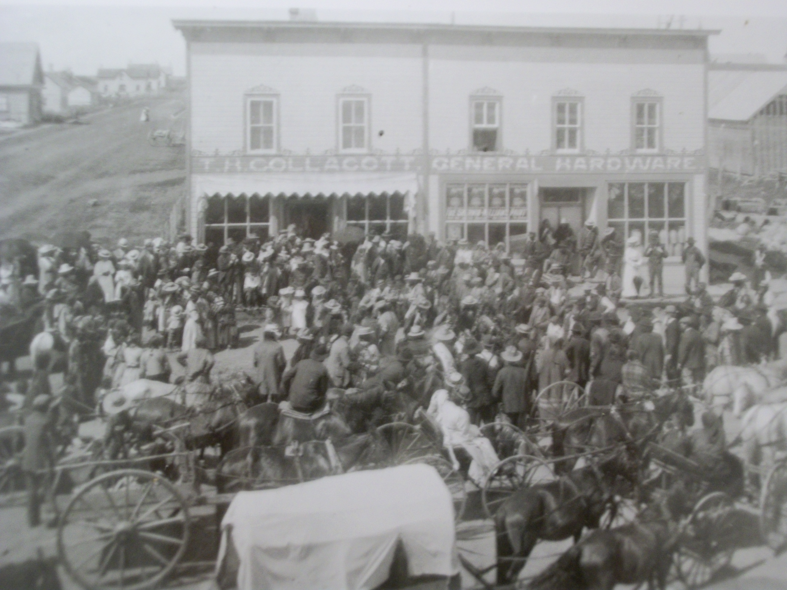
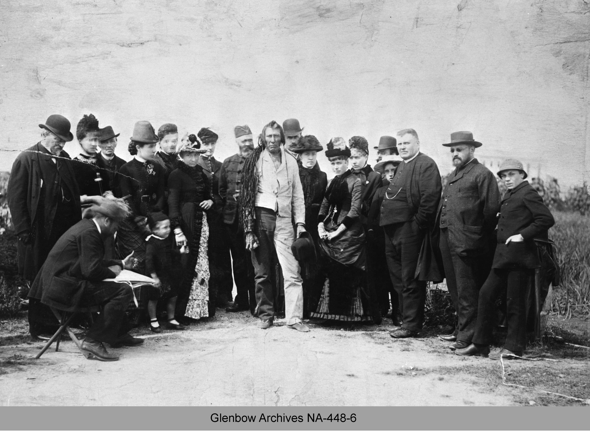

Beyond Treaty 6
BEYOND TREATY 6
“My Indian brothers…I have shaken hands with a few of you, I shake hands with all of you in my heart…God has given us a good day, I trust his eye is upon us and that what we do will be for the benefit of his children…You are, like me and my friends who are with me, children of the Queen. We are of the same blood, the same God made us, and the same Queen rules over us…what I will promise, and what I believe and hope you will take, is to last as long as that sun shines and yonder river flows…” – Lieutenant Governor Alexander Morris (Excerpt from opening remarks at Fort Carlton 1876)
“I have heard the Elders say that when the terms of the treaties were deliberated the smoke from the pipe carried that agreement to the Creator binding it forever. An agreement can be written in stone, stone can be chipped away, but the smoke from the sacred pipe signified to the First Nation peoples that the treaties could not be undone” – Ernest Benedict of Akwesasne, Mohawk reserve told the Indian Claims Commission in 1992 (Miller 139).
Before the Ink Dried

``When Indigenous Peoples talk about the land and the making of treaty, we are talking about our life and the life of future generations. Land is central to that process. We have a relationship with our Creation based on a legal system designed to protect and honour the land. These are the laws that guided Cree Peoples when the Chiefs negotiated and concluded Treaty Six in 1876``. Sharon H. Venne, "Treaties Made in Good Faith" in Native and Settlers—Now and Then (2007).
Before the Ink dried…
As soon as Treaty 6 concluded, the First Nations were experiencing difficulties with the government in respect of treaty fulfillment. Oral tradition among the Cree asserted that Big Bear, Little Pine, and Piapot wanted to see how “faithful” the government would be in honoring the treaties (Tobias 193). By 1879, the buffalo herds that once roamed the Canadian prairies were now depleted; Big Bear, Little Pine, their bands and other Cree, and Assiniboine followers made their way to the known buffalo ranges of the Milk and Missouri Rivers in the United States (Tobias 192). For the bands that remained in Canada, the people were starving, teepees were disheveled and in need of new hides, the First Nations life source was gone. Game was so scarce that once mighty bands were reduced to eating gophers, dogs, and even their horses, while some waited outside the HBC posts for rations (Stonechild and Waiser 34).
The First Nations distressed by this, looked to the government to assist them in establishing their reserves and provide farming equipment but the government had other priorities like building the railway and did little to help the plains First Nations. When the government did decide to pay attention to them, they would interpret the treaties narrowly or neglect to address them at all (Stonechild and Waiser 28). The First Nations could not understand that a short while ago they extended their hand and collectively decided to share the land with the newcomers in good faith resulting in a special nation to nation relationship. The truth was that the government did nothing to save the buffalo from extinction and did very little to promote agriculture (Stonechild and Waiser 34).
Selection of reserves proved to be disheartening for the First Nations, it was their understanding that they could select reserves where they wished, but the government situated reserves with unfavorable lands apart from each other and away from the rest of society. Many First Nations in Treaty 6 wanted to choose reserves in the Cypress Hills area so they could continue their way of life amongst one another and preserve what buffalo were left. However, they were discouraged as the government feared a high concentration of First Nations in one area would create strong alliances and a possible uprising against them like what was happening with the tribes in the United States. This was one of many violations of the Treaty. Dewdney also failed to distribute twine and ammunition as the Treaty stated (Tobias 210). The government viewed reserves as “training grounds” to prepare Indian people to live in Canadian society (Price 61). This was only the beginning of ill relations between the First Nations and the government.
Treaty 6 lands accommodated the settlement of lands for Europeans and resource based opportunities for westward expansion and development. The First Nations believe that they honored their terms of the treaty based on a nation to nation relationship and argue that the Government did not fulfill its promises and developed polices to work against the treaty and as a result has created animosity and resentment with the First Nations. First Nations and Government’s perspectives on interpretation of the Treaty remain distant and complex to this day. Significantly, First Nations understood that the treaty would assure them to continue their way of life physically and culturally. As a result of the lack of fulfillment of treaty terms by the government, First Nations dispute over their Treaty rights is ongoing in the form of lobbying, land claims, litigation, and negotiations with the federal government.
First Nations Farming
First Nations Farming
The treaties provided two hoes, one spade, and one scythe for each farming family; one plough for every ten families; five harrows for every twenty families, and for each band, one axe, three saws, files, a grindstone, an auger, carpenter’s tools, seeds, one yoke of oxen, one bull, and four cows (Buckley 35).

In signing treaties with the First Nations, the government promised to provide them with a way of life through farming. Agriculture was not only the government’s plan to develop an agricultural based economy in the west but it was a means to assimilate the First Nations into the rest of society. Following the settlement on reserves, the prairie First Nation’s were eager to establish farming practices on reserve, “it was the Indians, not the government, that showed an early and sustained interest in establishing agriculture on the reserves (Carter preface).” It was clear that the government was not prepared to deal with the new way of life promised to First Nations, the process was slow and the demand was great. First Nations leaders patiently waited upon the government to provide farming implements and farm instructors to the reserves. First Nations were in great need of rations to survive.
In 1879, the government introduced the reserve farm instruction program. David Laird was appointed the Indian Commissioner in the North West Territory (Stonechild and Waiser 34). He was responsible for some seventeen thousand First Nations people over a two hundred thousand square mile area in western Canada. Unfortunately he lasted a short two months and was replaced by Edgar Dewdney, and he introduced a farming policy, a survey for Cree reserves, and appointed twelve farming instructors (Tobias 194). He also used rations to maintain control and gave to Bands who had taken treaty, so those who did not sign treaty or whom had leaders that were seen as trouble makers to the government suffered along with their people. Dewdney’s plan appeared to work, as more bands would adhere to the Treaty thereafter.
In the beginning like any other new pursuit, the transition to farming in the North West was difficult for all people: the land had to be cleared and broken; the climate was not always favorable for crops; and farming implements were primitive. Although the obstacles were present for all early farmers, the First Nations made a genuine effort to farm. The Mosquito band was a good case, settling on marginal land west of the Red Pheasant reserve, they had cleared thirty acres within two years using grub hoes and axes (Stonechild and Waiser 36).
First Nations assisted the settlers upon their arrival to a foreign land, they learned from one another, and benefitted in their survival. Often First Nations people worked for non-First Nations farmer’s the work was as difficult as the climate. First Nations provided settlers with the knowledge of the land especially in a harsh climate and skills necessary for their survival. The Plains people knew much about their environment: vegetation; rainfall and frost patterns; availability of water; care of horses; knowledge of summer pasturage; and winter forage requirements. First Nations also shared their knowledge of the plants, roots, berries, and herbs. The First Nations provided services to the settlers by way of labor, supplying firewood, hay, posts, clothing, mocassins, assisting in harvesting, threshing, cutting brush, picking rocks, and clearing the lands for farming purposes (Nicholat 1).
By the late 1880’s, farming was thriving, some First Nations were doing well growing crops and testing new ones, using new farming techniques, all with what little they had:
Farmers in the Treaty 4 area were among the first in the Northwestto experiment with summer fallowing – an effective technique for moisture retention. In 1890, the first prize for wheat was won by reserve farms, both at Prince Albert and Regina. On Cowessess, Louis O’Soup’s field of wheat was said to be no different from white farmer’s and he won prizes at the Broadview fair. An inspecto at one of the Dakota reserves declared the wheat crops to be “as fine as any I had seen among the white settlers,” and the farmer’s “a very nice lot of Indians [who] seem to be industrious and therefore are deserving of encouragement (Buckley 52.)”
Some First Nations farmers in Saskatchewan did have success in farming and had commercially viable operations. It became apparent in some cases the First Nations were more successful than non-First Nations farmers, which caused the government to implement policies to benefit the interests of the non-First Nations farmers. Some non-First Nations farmers were concerned with the competition of the First Nations farmers and related this to the government. The government wanted the non-First Nations farmers to be prosperous in the hopes of attracting more settlers to the prairie provinces in pursuit of agriculture.
In 1889, Hayter Reed, at the time was Indian Commissioner in the Battlefords area and is most known for his Peasant Policy of 1889 introduced a system of farming to be adopted with the western First Nations. Indians were to copy ‘peasants of various countries’ and keep their operations small and their machinery rudimentary. Reed thought that a single acre of wheat, a portion of a second acre of roots and vegetables, and a cow or two could support an Indian farmer and his family. Reed also encouraged some districts to only grow root crops to limit the use of machinery in favour of simple tools (Carter 353). Reed boasted that while undermining the tribal systems he was endorsing in his Peasant Policy a spirit of individual responsibility over the collective ownership beliefs of First Nations people that he thought were too primitive to succeed in agriculture. The peasant farming policy was implemented to protect and maintain non-First Nations farming pursuits.
By the late 1880’s the Pass and Permit system was introduced and had devastating effects on First Nations farming and is blamed for failing their farming initiatives. The Pass system came into effect during and after the Riel Rebellion to monitor and restrict the freedom of the First Nations. It gave the Indian agents and farm instructors great power in flow of goods in and out of the reserve, where First Nations farmers had to attain permits to sell their goods. Sometimes permits were not granted or were granted too late and the goods rotted.
The Pass and Permit systems serve to restrict the flow of goods and services between First Nations people and the settlers, it also effectively limited interactions between the two communities. The Pass system was in use as late as World War II. It was officially removed from the Indian Act in 1951. The Permit system remained in the Indian Act until 1995 (Tang 8).
In order to leave the reserve, First Nations people had to attain a pass from the Indian Agent or Farm Instructor, giving a reason why they needed to leave, the duration, and whether or not they were travelling with a gun. It was against the law for a First Nations person to be travelling without a pass, and if they were and caught by the North West Mounted Police, they were arrested and put into jail. The pass and permit system had no basis in law for implementation of the treaties, the treaties provided freedom and movement to First Nations (Tang 8).
In essence, First Nations were just as successful and at times more successful at farming than non-First Nations. The introduction of government policies failed the First Nations treaty right to agriculture. First Nations are now currently making claims against the government for the lack of agricultural assistance as promised in the treaties.
Residential Schools
Residential Schools
While negotiating Treaty 6, the First Nations wanted their people to become educated with the intention of having schools on their reserves. Nicholas Davin authored a report to the Canadian government in 1879 recommending residential schools be established as a cost effective approach to speedily assimilate First Nations children modeled after American industrial schools. John A MacDonald agreed and said:
When the school is on the reserve, the child lives with its parents, who are savages, and though he may learn to read and write, his habits and training mode of thought are Indian. He is simply a savage who can read and write. It has been strongly impressed upon myself, as head of the Department, that Indian children should be withdrawn as much as possible from the parental influence, and the only way to do that would be to put them in central training industrial schools where they will acquire the habits and modes of thought of white men (Miller 40).
Residential schools opened in Saskatchewan in 1883 and 1884 to Qu’Appelle, High River, and Battleford (Office of the Treaty Commisioner, Treaty Essential Learnings: We are all Treaty People 22). The goals of the schools were to “assimilate and civilize” children so that they could live amongst the rest of Canadian society. The government paid for the operation of the schools but the Catholic, Anglican, United, and Presbyterian churches ran the schools daily operations. Most First Nations children were forced to attend these schools, at times children were taken from their homes and parents were helpless as it was against the law not to let them go.

The schools had these objectives in common:
- Anything to do with First Nations culture was eliminated including their language, cutting their hair ,alienating traditional clothing, and food;
- Segregation between family members and boys and girls took place;
- Children learned English, celebrated Christian holidays, played European based sports;
- Schooling consisted mostly of religious instruction and training for manual labor. They also learned practical skills like sewing, woodworking, reading, and writing (Roberts 120).
The residential schools promoted European values and if the children did not adhere to these teachings, they faced awful consequences. It is common knowledge that physical, mental, emotional, spiritual, and sexual abuse took place at the residential schools. Children were not allowed to see their families during the school year, and some got to visit their families during the summer months. The schools isolated children from their parents and extended families to the point that they did not know one another. And as a result, their language, culture, identity, and pride were eliminated from them. Not all students had negative experiences, but most children did.
There were approximately 22 residential schools in Saskatchewan, all residential schools were eventually shut down with the last one in 1996 at Gordon’s First Nation. The era of residential schools has left a lasting legacy for First Nations to rebuild their culture and identity. It will take generations before this will happen. In the 1990’s, the churches and federal government publicly apologized for the residential schools. Although, First Nations were subjected to such inhumane treatment to eradicate the “Indian” from them, the First Nations together have survived and is in the process of healing and rejuvenation of their cultures and practices.
Interpretations and Misunderstandings

Interpretation and Misunderstandings
Treaty 6 created a continuing obligation for the government to the First Nations, obligations that are difficult for most of society to understand and accept as part of our history within this province and Canada. Since the inception of treaties in Saskatchewan, the First Nations perspective of the treaties is mostly unknown to society and as a result has created misconceptions based on misunderstanding and misinterpretations. The entirety of the treaty process was unfair and unjust to the First Nations and has resulted in 135 year old grievances over the process and non-fulfillment of the treaties. For instance, the government from the beginning had complete control over the treaty process: they chose when and where the treaties were to be negotiated, setting the agenda and the terms, none of which was revealed in advance, combined with the lack of competent translators only weakened the First Nations position (Buckley 32). The Treaty process lacked the flexibility to accommodate the viewpoints and wishes of First Nations people (McLeod 41). The First Nations were vulnerable at a time of great change, the treaties were their only option to survival.
An important factor was the cultural and language differences between the First Nations and Europeans this led to misinterpretations between the two groups. While the government representatives “were the products of a literate society the First Nations came from an oral culture (Miller 139).” And language barriers “meant that First Nations didn’t fully understand the terms of the agreements. Both sides had translators, but it was impossible to translate the ideas behind decades of tradition…they didn’t realize they were giving up anything (Roberts 89).”
Both had different views on ownership of land, First Nations believed that land could not be owned, that it was a gift from the Creator, and they were its guardians not its owners as the land was their means of survival, while Europeans had a tradition of private land ownership (Roberts 89). The size of the reserves was an area of misunderstanding. Many First Nation leaders described huge areas of land that they believed were promised in the treaties. The commissioners never explained the meaning or actual size of a square mile (Price 62).
Treaties amongst First Nations societies were not uncommon and occurred for thousands of years. They lived within their own established territories governing through deep-rooted unwritten customs, codes of conduct, and rich oral history passed on through generations. Oral history is significant in First Nations culture, it is the manner in which all aspects of life, its teachings, language, history, laws, and customs are transmitted. Treaties were a way of settling disputes for land, trading, hunting and gathering, marriage between tribes, and ending wars.
For example, one of the first recorded treaties between First Nations involved the Onodowohgah (Seneca), Kanien’Kehaka (Mohawk), Onundagaono (Onondaga), Onayotekaono (Oneida), and Guyohkohnyoh (Cayuga). This treaty was called the Great Law of Peace of the People of the Longhouse and predates the year 1450. It covered 117 articles, including the establishment of a code of law and form of government between the five nations. The Treaty was passed on orally and was not recorded until 1880 (Roberts 90).
First Nations viewed the treaties like other treaties where there would be a mutual agreement between the parties respecting each others interests, in this case land sharing and compensation while the “government seen them as land surrenders, the first step in the assimilation process (Roberts 89).” This process was enacted by means of government policies that affected the very root of the treaties. The First Nations did not take the issue of Treaty lightly, nor were they ignorant of sharing the land with the newcomers, they believed that they could co-exist with one another in the spirit and intent of Treaty.